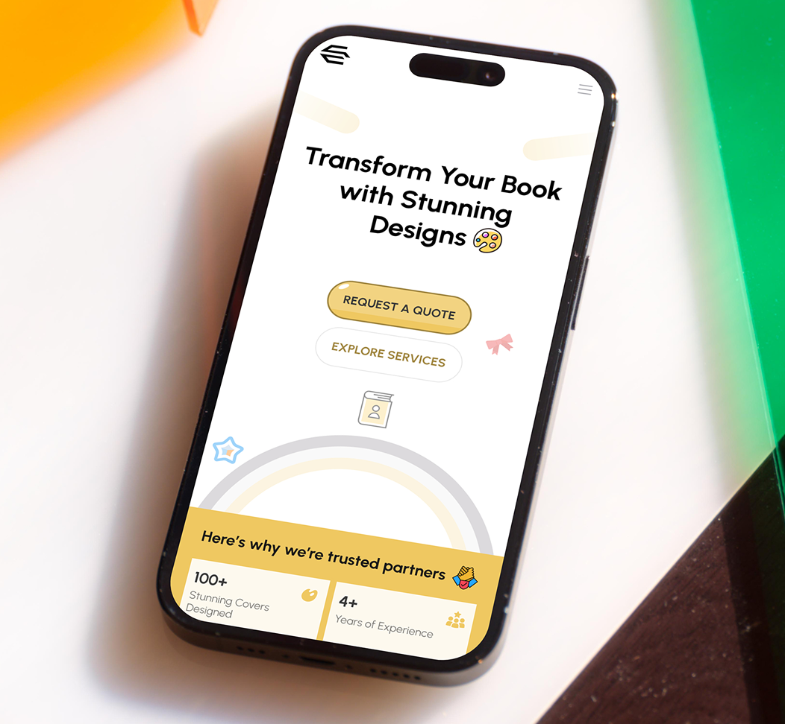

A portfolio worthy
of the work.
Oladele is a talented graphic designer whose work speaks for itself — but his digital presence wasn't. Potential clients were visiting his portfolio, not seeing the quality they were getting, and leaving to hire someone else. The work existed. The presentation didn't.
My job: build a portfolio that communicated his design sensibility in the first 5 seconds, and made the journey from "visitor" to "booked client" feel effortless.
When great work
goes unseen.
Oladele's original portfolio was built on a generic template — clean but soulless. It failed to differentiate him in a crowded market where clients are choosing between multiple talented designers simultaneously.
The bigger issue: the portfolio was organized around project categories (logos, posters, social media) rather than around outcomes and stories. Clients were seeing outputs, not understanding why Oladele's process led to better results.
"His portfolio said 'I do graphic design.' It needed to say 'I build brands that make businesses more money.'"
Brand before
buttons.
I started by treating this as a branding project, not a web design project. Before touching Figma, I worked with Oladele on his positioning: who is he for, what makes him different, and what should someone feel in the first 5 seconds on his site.
A 2-hour session to define Oladele's niche, ideal client type, and unique design philosophy. This drove every creative decision that followed.
Reviewed 15 graphic designer portfolios in his target market. Identified the visual clichés everyone was using — and what the gaps were for standing out.
Selected and reframed the 6 strongest projects — rewriting descriptions from "here's what I made" to "here's the problem I solved and why it worked."
Explored 3 distinct visual directions before landing on the bold, editorial approach that reflected his personality and the premium positioning we were after.
Three routes,
one choice.
We explored three distinct visual directions before committing. The chosen direction had to feel premium, memorable, and authentic to Oladele's bold, expressive style.
White space heavy, muted palette. Safe but generic — blends in rather than stands out.
Dark, high-contrast, dramatic typography. Instantly premium and deeply memorable — reflects his actual work.
Purple gradient aesthetic — popular in 2023 but already feeling dated. Strong but predictable.



Work that converts,
not just impresses.
Within the first month of launch, client inquiry volume tripled compared to the previous portfolio. The bounce rate dropped dramatically — visitors were now actually engaging with the case studies and reaching the contact form instead of leaving after the hero section.
The portfolio was also featured in the Dribbble weekly highlights — validation not just from clients, but from the design community that the visual direction was genuinely exceptional.
"Clients now come to me already convinced. The portfolio does the selling before I even get on the call."